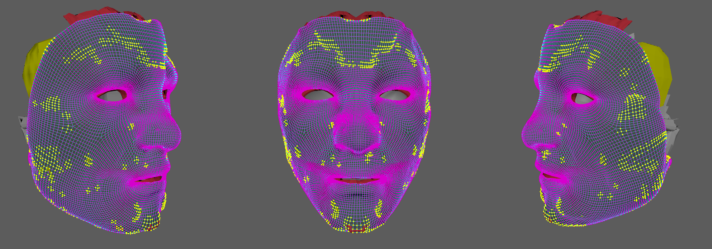

Skin-to-Muscle Registration Pipeline
An ongoing undergraduate research project at Simon Fraser University that automates skin-to-muscle registration for biomechanical facial models. The pipeline is written in Python and runs inside Autodesk Maya, using computational geometry to fit a high-resolution skin mesh over the internal anatomy beneath it. The aim is to replace slow, manual shrink-wrap and cleanup work with a reproducible automated workflow.

Problem & Context
A biomechanical facial model is built from an outer skin mesh plus a large set of internal structures — muscles, fat compartments, cartilage, and bone. Before the model can be simulated, the skin has to be registered over that anatomy so it sits on the internal geometry in a way that stays anatomically plausible when the face moves.
Today that step is largely manual. An artist shrink-wraps the skin onto the anatomy and then cleans up the places where the result looks wrong, which is slow, hard to reproduce, and difficult to scale across models. The scale is the core of the problem: roughly 16,000+ skin vertices have to be positioned relative to about 43 anatomical structures. This project focuses on automating that geometry-processing bottleneck.
What It Does
- Automated registration — Fits a high-resolution skin mesh over the internal facial anatomy without manual shrink-wrapping
- Anatomy-aware geometry — Uses distance and closest-surface queries against muscles, fat compartments, and bone
- Artifact detection — Identifies regions where registration introduces geometric irregularities in the skin surface
- Localized cleanup — Applies correction only to the flagged regions instead of smoothing the entire surface
- Maya integration — Runs inside the existing Autodesk Maya workflow so intermediate results can be inspected visually
Approach
The pipeline runs as a sequence of stages: skin mesh → anatomical geometry queries → registration and deformation → artifact detection → localized smoothing → evaluation. Each skin vertex is evaluated against the anatomy beneath it using signed distance functions and closest-surface queries, which give both the nearest structure and which side of it the vertex sits on. K-nearest surface blending (K = 5) lets a vertex be influenced by several nearby structures rather than snapping to one, Laplacian smoothing keeps the result continuous across the surface, and collision handling prevents the skin from passing through the anatomy it is fitted to.
Detecting where registration has gone wrong turned out to be the harder half of the problem, so it has been approached as a series of experiments kept as reproducible milestones. These progressed from a Laplacian-based baseline that flags strong local deviation, through a comparison against a supplied reference mesh, to multi-scale detection that checks whether a deviation persists across neighborhood sizes. The current direction generates the reference surface from the underlying anatomy itself using SDF-based projection — preserving skin topology and vertex correspondence — and combines it with the multi-scale analysis and filtering from the earlier milestones. The next stage is applying the existing localized smoothing only to the flagged regions and evaluating the corrected mesh over repeated registration passes.
Tech Stack
Key Takeaways
The interesting part of this work is not implementing a single geometry algorithm — it is deciding what "correct" registration means when there is no perfect ground-truth surface to compare against. Some artifacts are sharp local defects that stand out immediately; others are perfectly smooth in a mathematical sense but anatomically wrong, so purely local curvature measures flag natural features like lips and nostrils while missing the real problems.
That pushes the work toward combining local geometry with anatomical context, and toward treating each detection method as an experiment to be implemented, evaluated against the previous one, and kept reproducible rather than replaced. Much of the engineering effort goes into making intermediate results inspectable so those comparisons are possible at all.